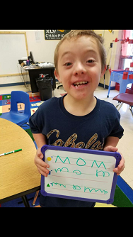

✦ The Special Needs Village ✦
Journey-DS
My name is Jodie and I am Ryder's mama. Ryder has Standard Trisomy 21, which is a type of Down Syndrome. When I was 13 weeks pregnant they did an ultrasound to look for a nuchal fold, he had the fold. At 20 weeks pregnant they sent me to a specialist to have another one. The specialist stated that there was a 5% chance that he would have Down Syndrome. When he was born they told us they couldn't tell for sure. He had the Simian crease and planters gap on his toes but when we looked at him we could only see the "Downs look" sometimes. He had no health or feeding issues so we were discharged the next day.

Before discharging us home they did do a blood test to test for it. 2 weeks later we received the official diagnosis, the test came back positive. We cried hard for what it meant for Ryder but 30 minutes later we quit, hugged him tight and moved forward. We never cared if he had Down Syndrome or not, and we refused the amnio after the 2 ultrasounds. He was our beautiful baby either way.
He started speech and occupational therapy at 1 year old. At 3 years old he started preschool where he received speech, occupational and speech therapies. He is still receiving speech and occupation therapies at school as part of his curriculum.He is in a special needs classroom but goes to a general ed classroom for an hour each day. He also participates in PE, music and art with the general ed classes. He has the BEST teacher in the world and we are so happy!
Ryder is a part of everything we do as a family. He has 4 brothers that love and include him. He helps out on our ranch, raises and shows animals for the fair and loves taking pictures. He has chores and is a fully included part of our family system. We thank God every day for entrusting us with this precious gift! We are better people becasue of our special and amazing son. If you ever want the best hug, need a smile or want to fill your heart burst with love, surround yourself with people who have Down Syndrome. Your life will be forever blessed!
